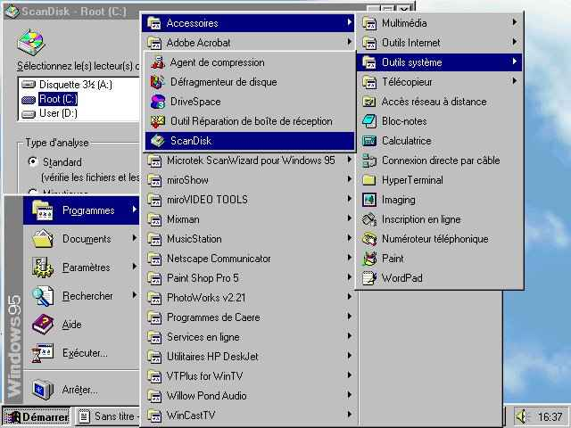
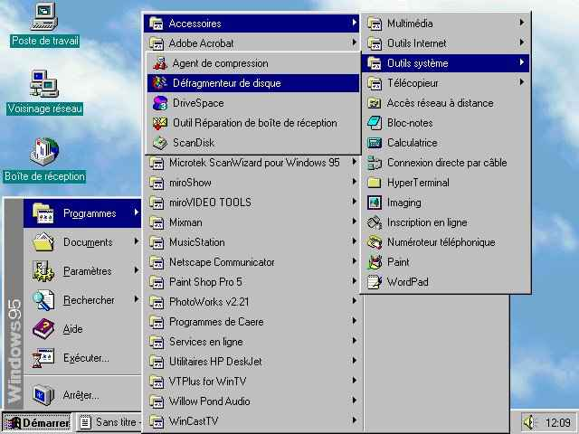
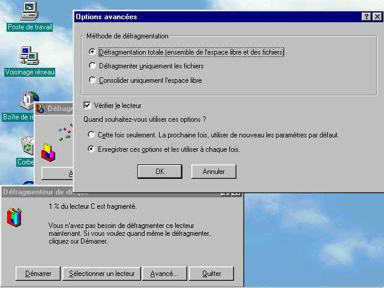
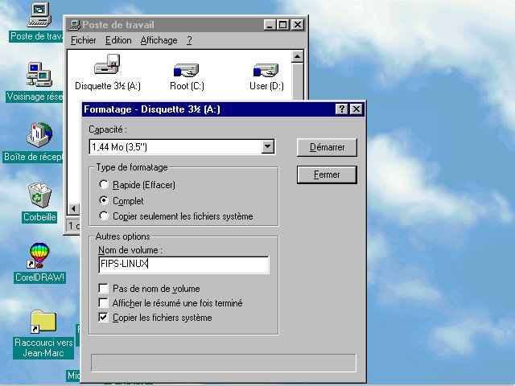
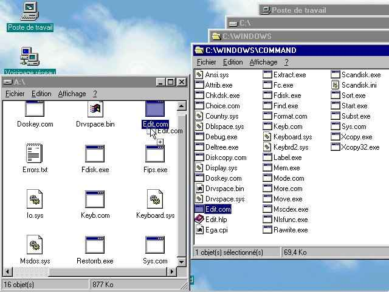
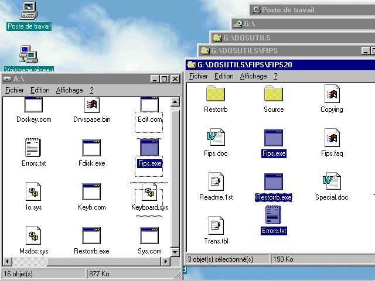
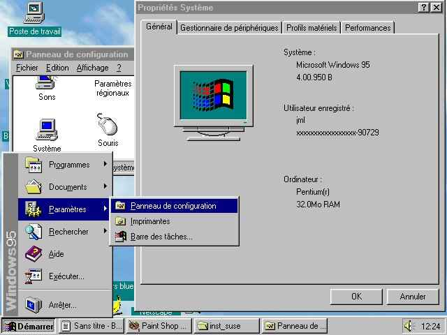
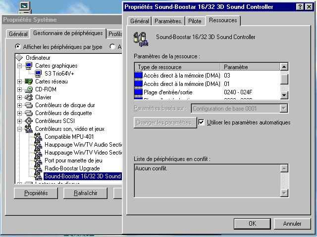

Solutions informatiques simples pour un monde complexe |
|
|
Préparation à l'installation de LINUX avec Windows
Défragmentation du disque dur
Avant de défragmenter le disque dur, il faut verifier que le disque dur ne contient aucune erreur qui pourrait être fatale lorsque "defrag" réorganisera les données contenues sur le disque.
- Allumer l'ordinateur.
- Démarrer Windows95 ou Windows98.
- Utiliser scandisk pour vérifier que le disque est en bon état :


- Défragmenter totalement le disque dur avec le défragmenteur de disque fourni en standard avec Windows.

Création d'une disquette DOS pour FIPS

- Cliquer sur le bouton de droite de la souris en positionnant le pointeur sur l'icône "Disquette" du "Poste de travail"
- Lancer le formatage.
- Placer une disquette vierge dans le lecteur 3''1/2.
- Choisir le type de formatage "Complet"
- Selectionner l'option "Copier les fichiers système"
- Démarrer le formatage
Quand le formatage est terminé, fermer le programme de formatage. Copier les outils DOS indispensables qui se trouvent dans le répertoire C:\WINDOWS\COMMAND: edit.com fdisk.exe format.com sys.com ...

- Copier FIPS et ses autres fichiers indispensables qui se trouvent sur le CD-ROM Linux vers la disquette DOS.
- Avec SuSE FIPS se trouve dans le répertoire \DOSUTILS\FIPS\FIPS20
- FIPS.EXE (2.0)
- errors.txt
- restorb.exe
Déterminer
la configuration matérielle de l'ordinateur

- Utiliser les "Propriétés Système" du "Panneau de configuration" de Windows9X ou la documentation fournie avec le PC pour trouver les informations relatives à sa configuration.
(Utiliser le bouton "Imprimer...", si le PC est connecté à une imprimante, pour imprimer toute la liste du matériel et sa configuration).
- Noter la configuration du système :
- type de la carte graphique et son fabricant
- la résolution maximale et le nombre de couleurs supportée par le moniteur
- type de la carte son.
- type de la carte SCSI
- type de la carte ethernet
- type de souris et son interface (COM1, COM2, PS-AUX...)
- IRQ, DMA, Entrée-Sortie :
- de la carte son
- de la carte ethernet
- ...
